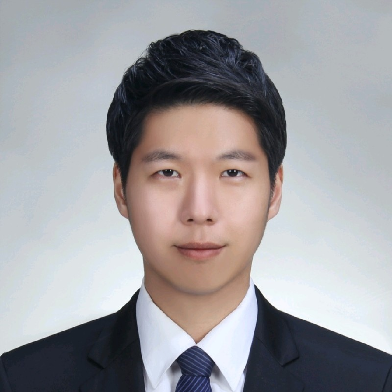
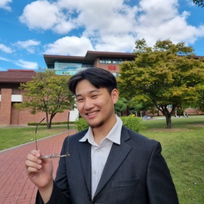

Knowledge and Democracy Lab
Welcome to the Knowledge and Democracy Lab! Based at KAIST, the Lab develops and applies computational and data scientific methods to understand how scientific and technological advances, including artificial intelligence and social media, shape politics and society.
Recruitment
The Lab seeks students who are enthusiastic about integrating theoretical insights with cutting-edge methods to leverage large-scale data for M.S. or Ph.D. degrees in Computational Social Science or Data Science. Students will be recruited through both the School of Digital Humanities and Computational Social Sciences and the Graduate School of Data Science. Please feel free to reach out at taegyoon@kaist.ac.kr for questions about the application process, research opportunities, or to learn more about the Lab's current projects and ongoing initiatives.
Students

